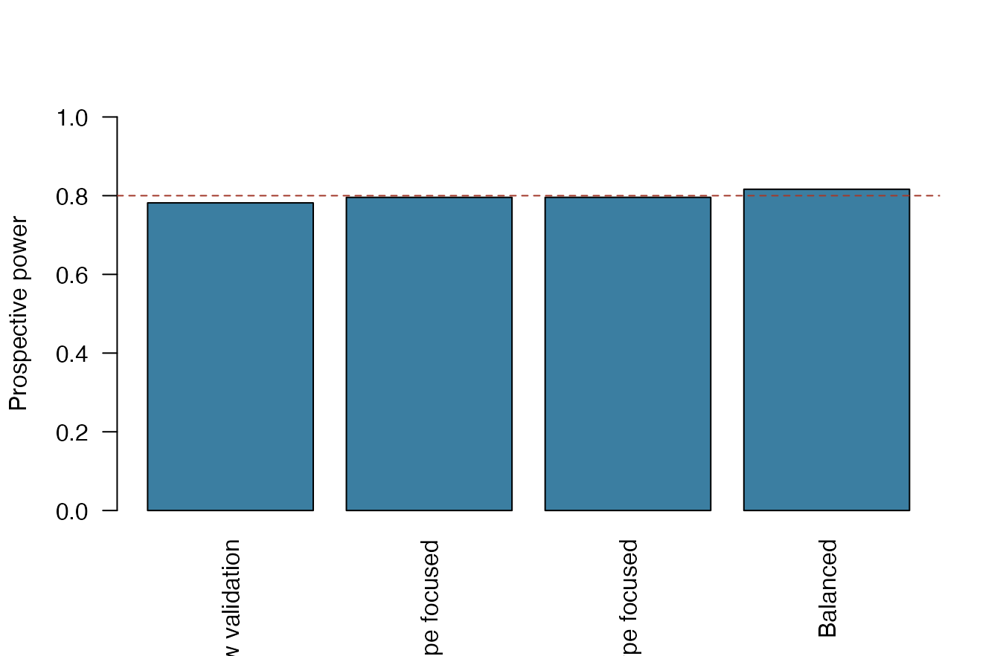

vignettes/paweh-07-lrtae-study-design.Rmd
paweh-07-lrtae-study-design.RmdLRTae is a likelihood-ratio framework for case-control genetic association studies in which phenotype classification, genotype classification, or both may be measured with error. A subset of participants can receive more accurate or gold-standard measurements. These validation data inform the error process and contribute information about the association.
The basic problem is easy to state:
true phenotype and genotype -> fallible measured phenotype and genotype -> potentially distorted apparent association
Validation provides a second path:
gold-standard measurements on a subset -> information about misclassification -> improved efficient information for the association test
paweh implements the prospective design
calculations lrtae_ncp(), lrtae_power(), and
lrtae_mssn(). They calculate expected operating
characteristics before data collection. The package does not implement
the observed-data iterative likelihood fitting or association test from
the historical LRTae spreadsheet and software.
Each planned participant belongs to one mutually exclusive measurement tier.
| Tier | Phenotype | Genotype | Fixed-design argument | MSSN allocation argument |
|---|---|---|---|---|
| Fallible only | Fallible | Fallible | n_fallible |
prop_fallible |
| Phenotype validated | Gold standard | Fallible | n_pheno_validated |
prop_pheno_validated |
| Genotype validated | Fallible | Gold standard | n_geno_validated |
prop_geno_validated |
| Both validated | Gold standard | Gold standard | n_both_validated |
prop_both_validated |
The four fixed counts sum to the total sample size. The four MSSN proportions must be nonnegative and sum to one.
Matrix orientation is important: for both misclassification matrices, rows are true categories and columns are observed categories.
Consider a research team planning a case-control association study. Routine phenotype ascertainment is imperfect, routine genotyping has a small classification error, and gold-standard clinical adjudication and confirmatory genotyping are too expensive for every participant.
The following deterministic inputs come from a historical LRTae development workbook. They are used here as a reproducible worked design, not as observed patient data and not as a realized NCP benchmark.
p_control <- c(0.5645454545, 0.3739393939, 0.0615151515)
p_case <- c(0.36, 0.48, 0.16)
q <- c(0.5, 0.5)
phenotype_error <- matrix(
c(0.98, 0.02,
0.04, 0.96),
nrow = 2,
byrow = TRUE
)
genotype_error <- matrix(
c(0.965, 0.025, 0.010,
0.025, 0.950, 0.025,
0.010, 0.025, 0.965),
nrow = 3,
byrow = TRUE
)
model_inputs <- list(
true_control_genotype_frequencies = p_control,
true_case_genotype_frequencies = p_case,
true_sampling_proportions = q,
phenotype_misclassification_matrix = phenotype_error,
genotype_misclassification_matrix = genotype_error
)
tier_counts <- list(
n_fallible = 248,
n_pheno_validated = 135,
n_geno_validated = 72,
n_both_validated = 45
)The sampling proportions are in control/case order. The
genotype-frequency vectors use the same three-category order as the rows
and columns of genotype_error.
The noncentrality parameter (NCP) summarizes the expected separation between the alternative and null distributions. Larger values imply greater expected ability to detect association, holding the reference distribution fixed.
Technically, the implementation evaluates
where contrasts the free control and case genotype frequencies and is their efficient information after nuisance parameters are eliminated by a Schur complement. This is an expected-information design quantity; it is not the likelihood-ratio statistic from one simulated or observed data set.
historical_power <- do.call(
lrtae_power,
c(model_inputs, tier_counts, list(alpha = 0.05))
)
historical_power
#> $power
#> [1] 0.9925041
#>
#> $ncp
#> [1] 22.40827
#>
#> $df
#> [1] 2
#>
#> $alpha
#> [1] 0.05
#>
#> $critical_value
#> [1] 5.991465
#>
#> $n_fallible
#> [1] 248
#>
#> $n_pheno_validated
#> [1] 135
#>
#> $n_geno_validated
#> [1] 72
#>
#> $n_both_validated
#> [1] 45
#>
#> $N_total
#> [1] 500
#>
#> attr(,"class")
#> [1] "lrtae_power"For three genotype categories, the test has 3 - 1 = 2
degrees of freedom. The returned object records power, NCP, degrees of
freedom, significance level, critical value, all four tier counts, and
total sample size.
The workbook allocation corresponds to proportions 248/500, 135/500, 72/500, and 45/500. The same planned allocation can be used to ask how many total participants are required for 80% power.
historical_mssn <- do.call(
lrtae_mssn,
c(
model_inputs,
list(
target_power = 0.80,
alpha = 0.05,
prop_fallible = 248 / 500,
prop_pheno_validated = 135 / 500,
prop_geno_validated = 72 / 500,
prop_both_validated = 45 / 500
)
)
)
historical_mssn
#> $MSSN_total
#> [1] 216
#>
#> $target_power
#> [1] 0.8
#>
#> $achieved_power
#> [1] 0.8021865
#>
#> $achieved_ncp
#> [1] 9.685026
#>
#> $df
#> [1] 2
#>
#> $alpha
#> [1] 0.05
#>
#> $critical_value
#> [1] 5.991465
#>
#> $prop_fallible
#> [1] 0.496
#>
#> $prop_pheno_validated
#> [1] 0.27
#>
#> $prop_geno_validated
#> [1] 0.144
#>
#> $prop_both_validated
#> [1] 0.09
#>
#> $n_fallible
#> [1] 107
#>
#> $n_pheno_validated
#> [1] 58
#>
#> $n_geno_validated
#> [1] 31
#>
#> $n_both_validated
#> [1] 20
#>
#> attr(,"class")
#> [1] "lrtae_mssn"MSSN_total is the minimum integer total under this
allocation rule. The Hamilton largest-remainder rule assigns integer
tier counts that sum exactly to the selected total, so the achieved
proportions can differ slightly from the requested proportions. The
returned achieved power is therefore normally just above, rather than
exactly equal to, the target.
Here four designs have the same total sample size
(N = 220) and identical biological and error assumptions.
Only the allocation across validation tiers changes. The low-validation
design retains a small number in every validation tier; complete absence
of validation can leave the error model unidentified and its information
matrix singular.
allocations <- data.frame(
design = c(
"Low validation", "Phenotype focused", "Genotype focused", "Balanced"
),
n_fallible = c(198, 154, 154, 110),
n_pheno_validated = c(9, 44, 11, 33),
n_geno_validated = c(9, 11, 44, 33),
n_both_validated = c(4, 11, 11, 44),
stringsAsFactors = FALSE
)
design_results <- lapply(seq_len(nrow(allocations)), function(index) {
counts <- as.list(allocations[index, 2:5])
do.call(lrtae_power, c(model_inputs, counts, list(alpha = 0.05)))
})
allocations$N_total <- rowSums(allocations[2:5])
allocations$NCP <- vapply(design_results, function(x) x$ncp, numeric(1))
allocations$Power <- vapply(design_results, function(x) x$power, numeric(1))
allocations
#> design n_fallible n_pheno_validated n_geno_validated
#> 1 Low validation 198 9 9
#> 2 Phenotype focused 154 44 11
#> 3 Genotype focused 154 11 44
#> 4 Balanced 110 33 33
#> n_both_validated N_total NCP Power
#> 1 4 220 9.230733 0.7817215
#> 2 11 220 9.536493 0.7956772
#> 3 11 220 9.538300 0.7957574
#> 4 44 220 10.021618 0.8163019
barplot(
allocations$Power,
names.arg = allocations$design,
las = 2,
ylim = c(0, 1),
ylab = "Prospective power",
col = "#3B7EA1"
)
abline(h = 0.80, lty = 2, col = "#A33A2B")
Prospective LRTae power for four validation allocations with the same total sample size and error assumptions.
Validation is therefore not merely a data-cleaning exercise: it contributes statistical information. The comparison does not establish that one allocation is universally optimal. Phenotype and genotype validation can trade off differently under other frequencies, error matrices, costs, or effect sizes.
For the phenotype matrix,
98% of true controls are observed as controls and 2% as cases; 4% of true cases are observed as controls and 96% as cases. Again, true categories are rows and observed categories are columns.
The genotype matrix is read the same way. For example, a participant in the first true genotype category is observed in categories one, two, and three with probabilities 0.965, 0.025, and 0.010. Each row must sum to one, and its category order must match both genotype-frequency vectors.
The current LRTae functions are appropriate when:
Important limitations are:
Barral S, Haynes C, Stone M, Gordon D. LRTae: improving statistical power for genetic association with case/control data when phenotype and/or genotype misclassification errors are present. BMC Genetics. 2006;7:24. https://doi.org/10.1186/1471-2156-7-24.
Ji F, Yang Y, Haynes C, Finch SJ, Gordon D. Computing asymptotic power and sample size for case-control genetic association studies in the presence of phenotype and/or genotype misclassification errors. Statistical Applications in Genetics and Molecular Biology. 2005;4(1):Article 37. https://doi.org/10.2202/1544-6115.1184.
Gordon D, Finch SJ, Kim W. Heterogeneity in Statistical Genetics: How to Assess, Address, and Account for Mixtures in Association Studies. Springer; 2020. https://doi.org/10.1007/978-3-030-61121-7.
sessionInfo()
#> R version 4.6.1 (2026-06-24)
#> Platform: aarch64-apple-darwin23
#> Running under: macOS Tahoe 26.6.2
#>
#> Matrix products: default
#> BLAS: /Library/Frameworks/R.framework/Versions/4.6/Resources/lib/libRblas.0.dylib
#> LAPACK: /Library/Frameworks/R.framework/Versions/4.6/Resources/lib/libRlapack.dylib; LAPACK version 3.12.1
#>
#> locale:
#> [1] C.UTF-8/C.UTF-8/C.UTF-8/C/C.UTF-8/C.UTF-8
#>
#> time zone: America/New_York
#> tzcode source: internal
#>
#> attached base packages:
#> [1] stats graphics grDevices utils datasets methods base
#>
#> other attached packages:
#> [1] paweh_0.99.0 BiocStyle_2.40.0
#>
#> loaded via a namespace (and not attached):
#> [1] gtable_0.3.6 jsonlite_2.0.0 dplyr_1.2.1
#> [4] compiler_4.6.1 BiocManager_1.30.27 tidyselect_1.2.1
#> [7] dichromat_2.0-1 jquerylib_0.1.4 systemfonts_1.3.2
#> [10] scales_1.4.0 textshaping_1.0.5 yaml_2.3.12
#> [13] fastmap_1.2.0 ggplot2_4.0.3 R6_2.6.1
#> [16] generics_0.1.4 knitr_1.51 htmlwidgets_1.6.4
#> [19] tibble_3.3.1 bookdown_0.47 desc_1.4.3
#> [22] bslib_0.12.0 pillar_1.11.1 RColorBrewer_1.1-3
#> [25] rlang_1.3.0 cachem_1.1.0 xfun_0.60
#> [28] fs_2.1.0 sass_0.4.10 S7_0.2.2
#> [31] otel_0.2.0 cli_3.6.6 pkgdown_2.2.1
#> [34] magrittr_2.0.5 digest_0.6.39 grid_4.6.1
#> [37] mvtnorm_1.4-2 lifecycle_1.0.5 vctrs_0.7.3
#> [40] evaluate_1.0.5 glue_1.8.1 farver_2.1.2
#> [43] ragg_1.5.2 rmarkdown_2.31 pkgconfig_2.0.3
#> [46] tools_4.6.1 htmltools_0.5.9